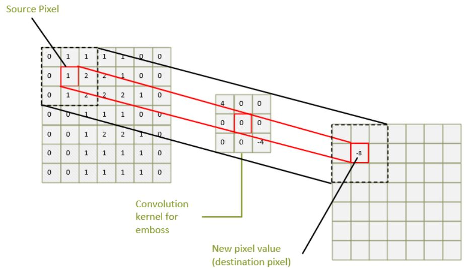

5.3. Accelerator - 2D Filter¶
This chapter provides the hardware and software architecture of the 2D Filter accelerator integrated into a platform.
5.3.1. Software Architecture¶
The accelerator uses Vitis Video Analytics (VVAS) as a framework to realize tranform and AI-powered solutions that can easily and seamlessly interface with other GStreamer elements such as video sources and sinks. VVAS provides a simplified interface to developers, exposing certain API to program the accleration kernel without having to worry about handeling buffer allocations.
vvas_xfilter is a generic VVAS infrastructure plugin that interact with the acceleration kernel through a set of APIs exposed by an acceleration software library corresponding to that kernel. An accelerator element has one source and one sink pad; vvas_xfilter can consume one temporal input frame from its source pad, data transform and produce one output frame on its sink pad. vvas_xfilter plug-in wraps the acceleration software library and prepares the acceleration software library handle (VVASKernel) to be passed to the core APIs as shown in the figure.
The vvas_xfilter plug-in provide many input properties to config the kerenl. Below are significant
kernels-config (mandatory) : Is a path to configuration file in JSON format and contains information required by the kernel, such as path to xclbin, acceleration software library and many more.
dynamic-config (optional) : configures one or many input parameters of the kernel during runtime, refer to all parameters under config from the JSON file above.
Acceleration software libraries : vvas_xfilter loads the shared acceleration software library, where acceleration software library controls the acceleration kernel, like register programming, or any other core logic that is required to implement the transform functions.
vvas_xfilter2d_sw is a shared acceleration software library that uses OpenCV libraries to perform filter2d computation as a pure software implmentation performed on the APU cores.
vvas_xfilter2d_pl is a shared acceleration software library that operates on PL-based kernel obtained by high level synthesis (HLS) from Xilinx Vitis Vision libraries.
below are the examples where VVAS framework is used with an acceleration software library developed for a hard-kernel IP / software library (e.g., OpenCV)
{kind=link}
For detailed documentaion of VVAS infrastructure plugins, plugin properties and JSON configuration file refer the below URL https://xilinx.github.io/VVAS/index.html
5.3.2. Hardware Architecture¶
A memory-to-memory (M2M) pipeline reads video frames from memory, does certain processing, and then writes the processed frames back into memory. A block diagram of the processing pipeline is shown in the following figure.
{kind=link}
The processing pipeline consists of 2D convolution filter in PL along with a data mover (DM). The memory-to-memory (m2m) processing pipeline with the 2D convolution filter is generated and integrated by the Vitis™ tool. The C-based 2D filter function is translated to RTL and then packaged as kernel object (.xo) using Vitis™ HLS. The Vitis™ tool uses the .xo and integrates the IPs into the platform.
For more information on 2D Convolution filter in PL refer to Vitis Vision Library: Custom Convolution
The data movers read input frames from the memory. The processing block runs convolution on the frame. Convolution is a common image processing technique that changes the intensity of a pixel to reflect the intensities of the surrounding pixels. This is widely used in image filters to achieve popular image effects like blur, sharpen, and edge detection.
The implemented algorithm uses a 3x3 kernel with programmable filter coefficients. The coefficients inside the kernel determine how to transform the pixels from the original image into the pixels of the processed image, as shown in the following figure.
{kind=link}
The algorithm performs a two-dimensional (2D) convolution for each pixel of the input image with a 3x3 kernel. Convolution is the sum of products, one for each coefficient/source pixel pair. As the reference design is using a 3x3 kernel, in this case it is the sum of nine products.
The result of this operation is the new intensity value of the center pixel in the output image. This scheme is repeated for every pixel of the image in raster-scan order, that is, line-by-line from top-left to bottom-right. In total, width x height 2D convolution operations are performed to process the entire image.
The pixel format used in this design is YUYV which is a packed format with 16 bits per pixel. Each pixel can be divided into two 8-bit components: one for luma (Y), the other for chroma (U/V alternating).
In this implementation, only the Y component is processed by the 2D convolution filter which is essentially a grayscale image. The reason is that the human eye is more sensitive to intensity than color. The combined U/Y components which accounts for the color is merged back into the final output image unmodified. The processed frame is then written back to memory by the datamover.
Licensed under the Apache License, Version 2.0 (the “License”); you may not use this file except in compliance with the License.
You may obtain a copy of the License at http://www.apache.org/licenses/LICENSE-2.0
Unless required by applicable law or agreed to in writing, software distributed under the License is distributed on an “AS IS” BASIS, WITHOUT WARRANTIES OR CONDITIONS OF ANY KIND, either express or implied. See the License for the specific language governing permissions and limitations under the License.